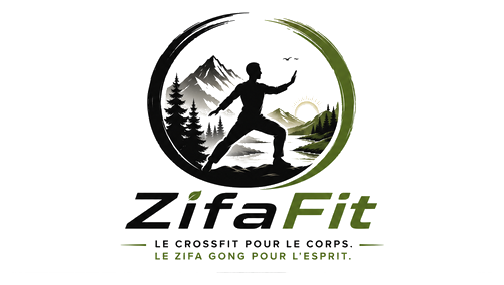
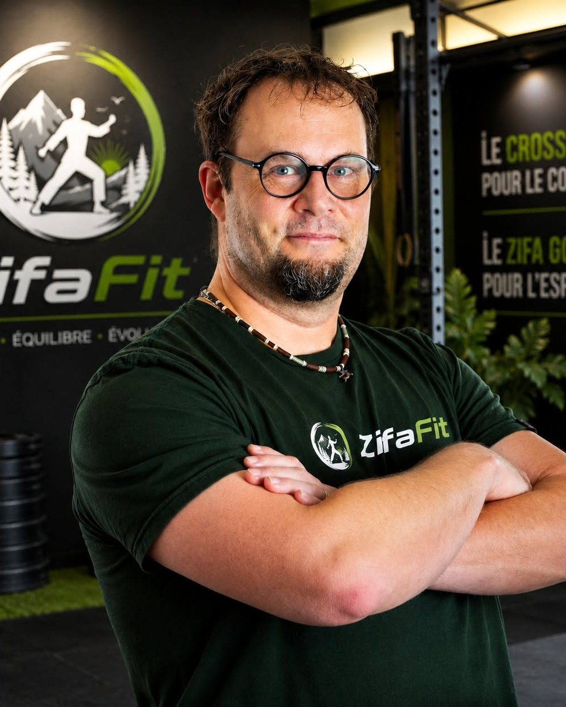

Bouger
Des séances simples, guidées et adaptées à différents niveaux.

Force • Équilibre • Nature
Des entraînements gratuits, accessibles et inspirés par la nature.
⌄Découvrir la méthode
ZifaFit combine 30 minutes d’entraînement fonctionnel avec 30 minutes de Zifa Gong pour travailler la force, la mobilité, la respiration et le calme mental.
Des séances simples, guidées et adaptées à différents niveaux.
Un retour au calme inspiré du Zifa Gong et de la nature.
Une méthode durable pour développer force, équilibre et constance.
Pourquoi ZifaFit est différent
Chaque séance est pensée comme un parcours complet : une première partie active pour développer tes capacités physiques, puis une deuxième partie plus calme pour retrouver ta respiration et ton équilibre.

La personne derrière ZifaFit
Bonjour, je suis Jocelyn. J’ai créé ZifaFit pour réunir deux pratiques qui m’ont beaucoup apporté : le CrossFit pour développer la force et le Zifa Gong pour retrouver le calme, la mobilité et l’équilibre.
En savoir plus sur Jocelyn →La méthode ZifaFit
Des séances de 30 minutes avec réchauffement, démonstrations, chronomètre et options selon ton niveau.
Des mouvements guidés pour la mobilité, la respiration, la concentration et le retour au calme.
Une ambiance visuelle et sonore apaisante, sans musique imposée, pour te laisser choisir ton propre rythme.
Gratuit pour tous
Les premières séances sont en préparation. Tu trouveras bientôt des entraînements CrossFit de 30 minutes et des séances de Zifa Gong de 30 minutes.
Suivre ZifaFit sur YouTubeService personnalisé
Ton programme peut être adapté à ton niveau, ton équipement, ton horaire, tes objectifs et tes limitations.
Le formulaire et les tarifs seront ajoutés ici avant le lancement officiel.
Suivre le projetRESTEZ CONNECTÉ À ZIFAFIT
ZifaFit est présentement en développement. Laissez vos coordonnées pour recevoir les nouveautés, ou pour manifester votre intérêt envers la première édition du deck Foundation.
Recevez les nouvelles vidéos, les événements, les prochaines éditions et le lancement officiel de ZifaFit.
Inscription gratuite. Aucun abonnement payant.PREMIÈRE ÉDITION
Le premier deck comprend 10 cartes d’entraînement, une carte légende, une carte Zifa Gong et une carte couverture.
Lors du tout premier envoi, FormSubmit fera parvenir un courriel d’activation à zifafit@outlook.com. Il faudra cliquer une seule fois sur le lien d’activation.
À propos
ZifaFit réunit l’intensité contrôlée du CrossFit et le calme du Zifa Gong. L’objectif est simple : aider les gens à développer un corps plus fort, un esprit plus calme et une routine durable.